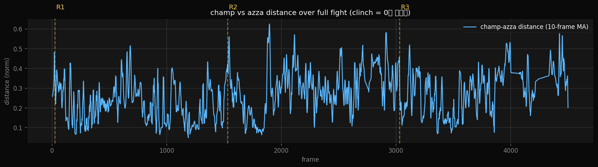
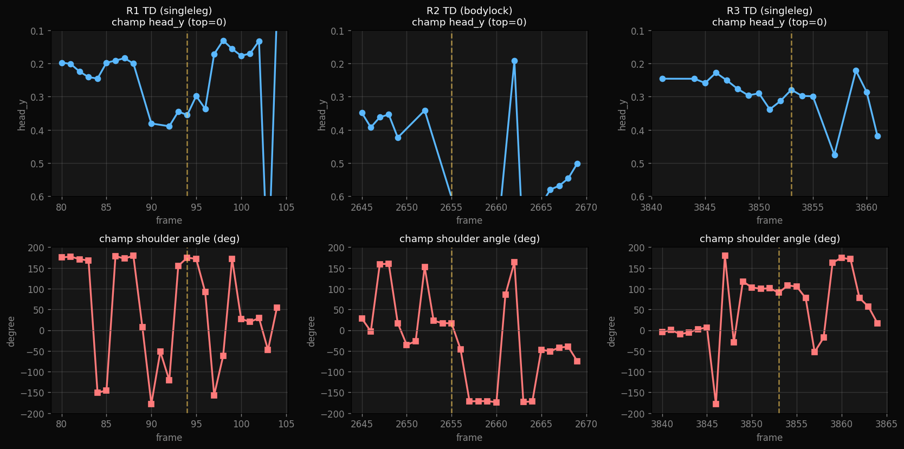
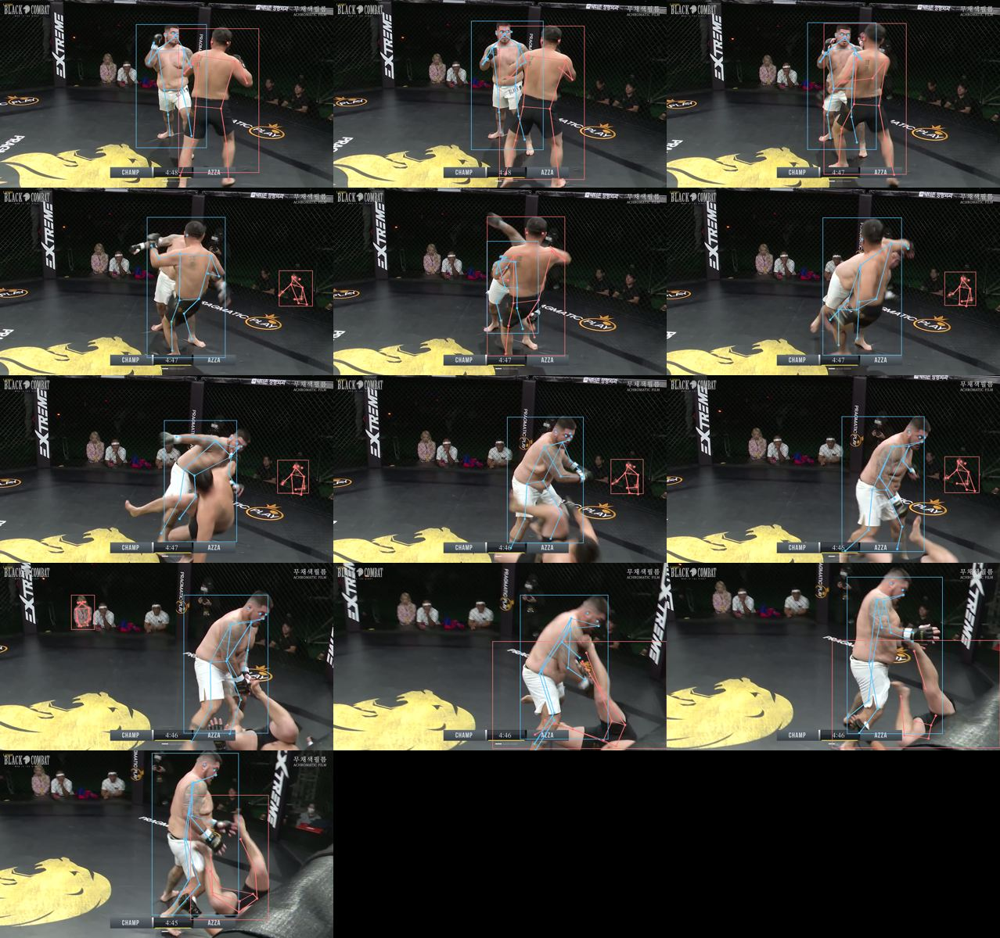
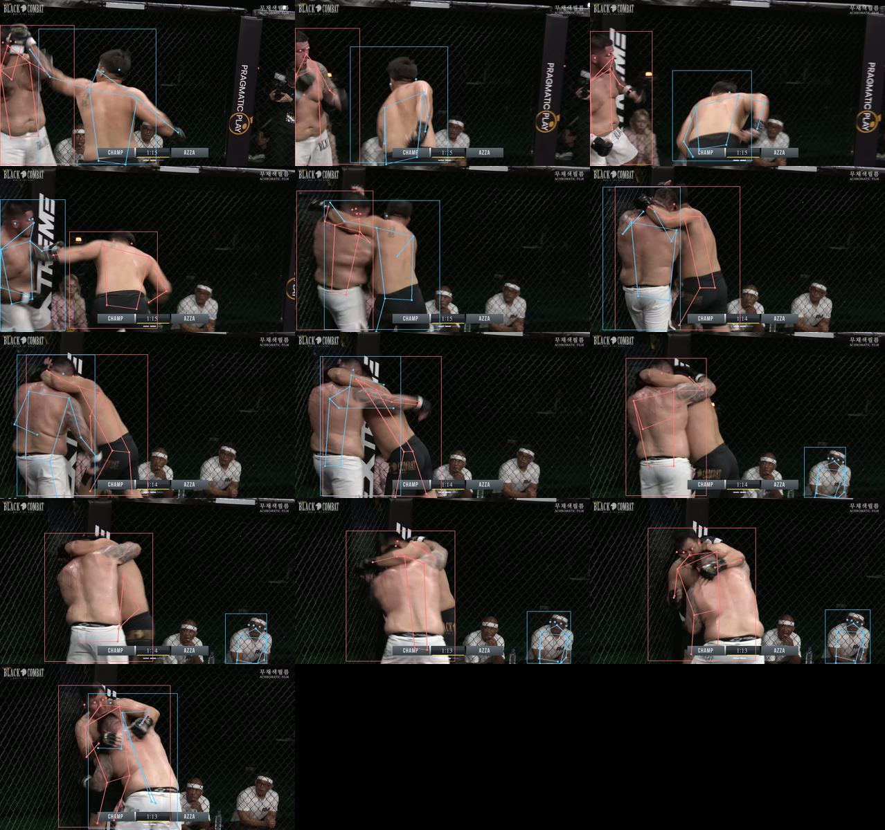
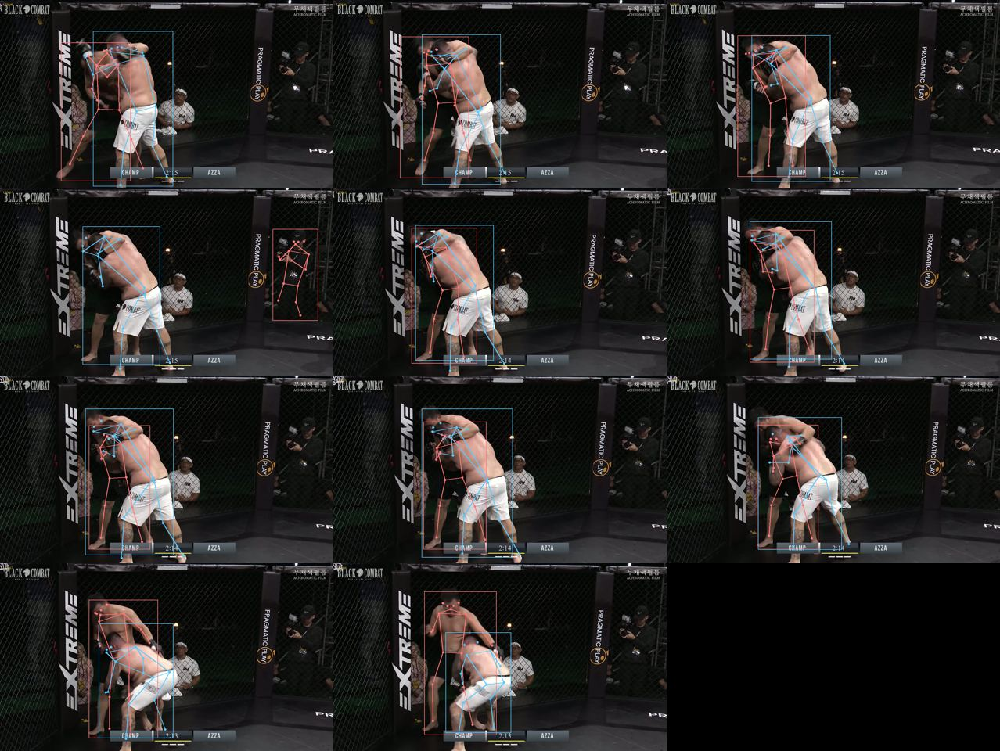
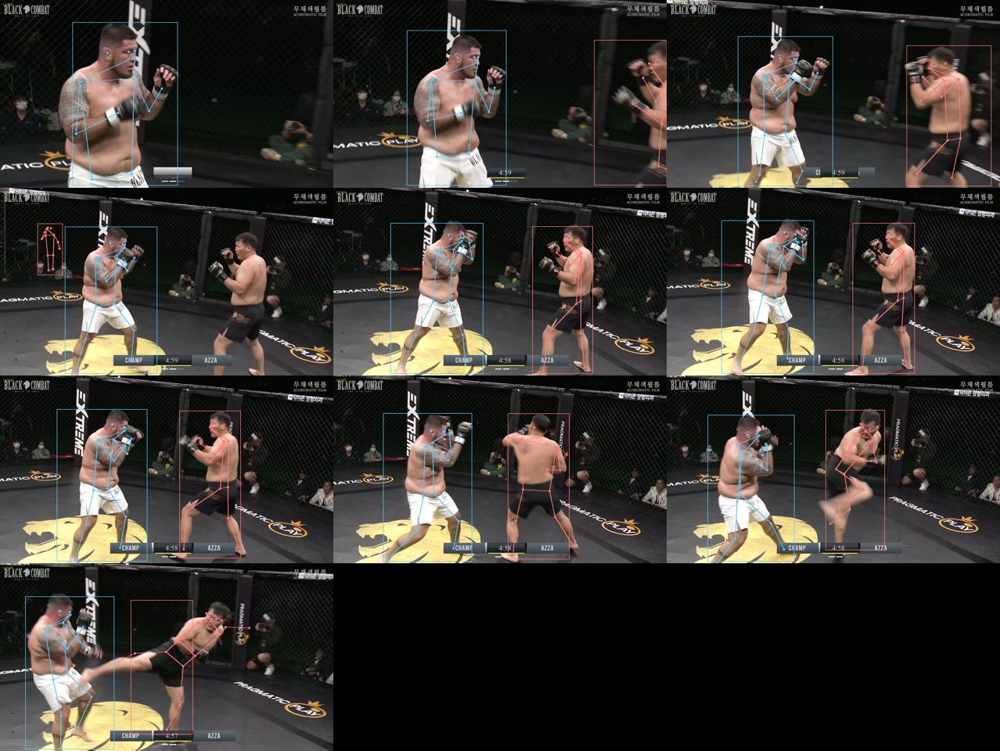
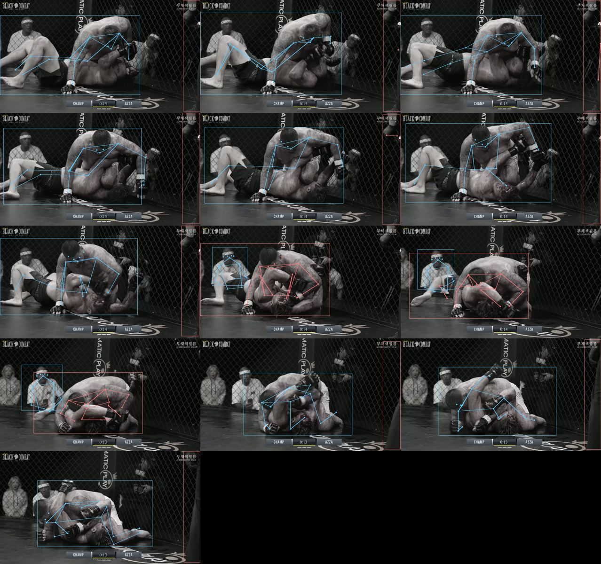

Roque Martinez
vs Tserendash Azjargal
BLACK COMBAT 9 · 2023.11.18 · 헤비급
3R 만장일치 판정승
v5 forensic · YOLOv8 pose + 4500 프레임 미시 자료
왜 v5 — 미시 자료
사람 눈으로 못 잡는 영역. YOLOv8 pose로 4500 프레임 전부에서 두 선수 17 관절 좌표 추출. 어깨 각도 · 머리 위치 · 골반 · 무릎 · 거리를 frame 단위 (0.2초)로 정량 측정.
전 경기 거리 trend

▲ champ vs azza box 거리 (10-frame moving avg). distance ≈ 0.1 = 클린치. 0.4+ = 거리 측정.
R1 첫 50초distance 0.5 → 0.1 급강하. champ가 R1 시작 후 거리 못 잡고 즉시 클린치 안기 패턴.
R2 시작 직후distance 0.55 (peak). R1과 다르게 standing 거리 유지. 그 직후 azza의 leg kick 2발 명중 → champ 즉시 클린치 진입.
R3 시작 첫 16초distance ~ 0.45 유지. champ가 처음으로 거리 유지 (R1 · R2와 다른 패턴 = 가스 보존 또는 setup).
TD 3건 시그니처 비교

▲ R1 · R2 · R3 TD 사건 ± 13 프레임 champ head_y + shoulder angle. 노란선 = TD landed 시점.
R1 TD (singleleg)head_y 0.20 → 0.42 (+22 % 화면 높이 만큼 머리 하강, 1초 안). shoulder angle 변동 폭 360°. explosive level change.
R2 TD (bodylock)clinch에서 시작 → pose 추출 자료 부족 (occlusion). frame 2655 직후 head_y 0.78 (champ 일어선 자세 — azza를 들고 슬램).
R3 TD (singleleg)head_y 0.25 → 0.30 (5 % 작은 하강만). shoulder angle 변동 폭 작음 ( ~ +90° 부근 stable). 같은 무기 (singleleg) 다른 메커니즘 — slow setup · 작은 level change.
본질: 같은 사람의 같은 무기 (single leg TD)가 R1과 R3에서 완전 다른 미시 패턴. R1 = explosive (가스 풀), R3 = slow controlled (가스 보존). 록키의 TD는 한 가지 패턴 X.
R1 TD 시퀀스 — 관절 라인

▲ R1 0:14 single leg TD (13 frame · 2.6초). 파랑 = champ, 빨강 = azza. frame 91 ~ 94 = TD 진입·완료.
R2 TD 시퀀스 — bodylock slam

▲ R2 3:44 body lock slam. 클린치에서 champ가 azza 들어올림 → 슬램.
R3 TD 시퀀스 — slow setup

▲ R3 2:44 single leg. R1과 같은 무기지만 진입 속도가 느림 (head_y plot 참고).
R2 leg kick — azza의 활약

▲ R2 0:00 azza의 첫 leg kick (champ 왼쪽 다리). 4초 안 2발 콤비.
R3 elbow — 결판 영역

▲ R3 4:45 ground top에서 champ 엘보 + 파운딩. azza 출혈 누적.
핵심 사실 (정량)
champ의 TD는 R1 = explosive · R3 = slow 두 패턴. 같은 무기 다른 메커니즘 = champ가 경기 후반으로 갈수록 가스 분배 전략적.
distance trend: R1 = champ 즉시 클린치 진입 · R2 = azza 거리 유지 (leg kick) · R3 = champ 16초 standing 후 클린치. R 별 진입 전략 다름.
azza standing landed 2 (R2 leg kick 2발). 그 외 모든 standing strike 가드 차단. azza의 유일한 효과적 무기 = leg kick.
champ 평균 head_y (standing 시) 0.20 vs ground top 시 0.40. 40% 높이 차이 = 록키의 진짜 자리는 ground top.
결판 = R3 그라운드 1분 48초 컨트롤 + 마지막 22초 엘보 · 파운딩 → 3R 만장일치 판정.
자료 한계 (정직)
이 보고서의 정확도
· YOLOv8m-pose · 17 keypoint · 4500 프레임 풀 추출 완료
· champ vs azza 식별 (트렁크 밝기) 정확도 ~ 85 % — ground 자세나 occlusion 시 부정확
· ByteTrack ID 잦은 swap — 트렁크 색으로 매 frame 재분류 적용
· 5fps sampling 한계 — 펀치 임팩트 정확 frame 잡기 어려움 (30fps + slowmo 시 정확도 ↑)
· TD R2 (bodylock) 자료 부족 — clinch occlusion으로 pose 추출 어려움
· 카메라 각도 변화 시 head_y 절대값 비교 부정확 (frame별 변화는 신뢰)
이 자료는 한 경기. 시그니처 통계 본질 (n ≥ 3 같은 사건) = 5경기 통합 시점.